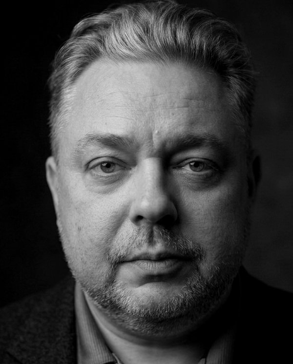

Porządkuję firmy, które urosły szybciej niż ich struktura
Strategia, procesy, wdrożenie, dziś także z agentami AI. Od kilkunastu do 3 800 lokalizacji: wszędzie ten sam wzór, inna skala.
Porozmawiajmy o Twoim projekcie →Rozwijam firmy. Każda inna, podobny wzór.
Zarządzałem sieciami od kilkunastu do kilku tysięcy lokalizacji. Prowadziłem grupę kapitałową pięciu spółek dla portugalskiego funduszu. Analizowałem rynki, robiłem fuzje i przejęcia, samodzielnie i w zespołach Deloitte. Restrukturyzowałem firmy, których właściciele nie wiedzieli od czego zacząć. Z wykształcenia jestem farmaceutą, i to się przydaje częściej niż myślisz.
Dzisiaj pracuję na styku analizy biznesowej i zarządzania projektami. Wchodzę do firmy, rozkładam problem na części, buduję plan i pilnuję żeby się zrealizował. Nie jestem teoretykiem. Działam tam, gdzie strategia spotyka się z Excelem i ludźmi, którzy muszą ją wdrożyć.
Większość problemów w firmach wygląda inaczej, ale działa tak samo: brak struktury, niejasne odpowiedzialności, decyzje podejmowane za późno. Widziałem to w sieciach handlowych, w startupach i w korporacjach. Dobra zmiana to taka, która sama się utrzymuje i doskonali w czasie.
Najnowsze projekty prowadzę metodą Spec-Driven Development: specyfikacja i testy powstają przed kodem, a kod piszą agenci AI pod moim nadzorem. Tak zbudowałem między innymi macierz 361 wymagań regulacyjnych dla systemów aptecznych i ORPR, otwarty standard procesów dla handlu detalicznego. AI traktuję jak każdą wcześniejszą transformację, którą prowadziłem: to przebudowa procesów i ról, nie magia. Różnica jest taka, że tym razem wszystko dzieje się szybciej.

ta strona ma swoje sekretyLubię firmy, które mają bałagan, bo to znaczy, że rosną. Nie wierzę w rewolucję, chyba że nie ma wyjścia. Zazwyczaj lepszy efekt dają małe zmiany robione konsekwentnie, które po roku dają efekt nie do poznania.
Kompetencje
Co robię i w czym mogę pomóc.
Wybrane projekty
Standardy
Wiedza o rynku zapisana tak, żeby mógł z niej korzystać człowiek, system i agent AI. Otwarte, wersjonowane, do sprawdzenia.
Retail nie miał wspólnego języka procesów, jak logistyka ma SCOR. Napisałem go: słownik procesów handlu detalicznego, w którym każdy proces ma jedną definicję, właściciela i granice. Dla zarządów sieci, dostawców IT i zespołów budujących agentów AI.
361 reguł, 1 083 scenariusze testowe, 122 karty źródłowe z odesłaniami do przepisów. Druga warstwa tej samej konstrukcji: macierz mówi „musisz”, ORPR mówi „gdzie i kto”.
Jak powstała →Od 2020 roku prowadzę też CPAPblog.pl - największy w Polsce niezależny serwis o bezdechu sennym (50 000+ odwiedzin/mies.).
Napisałem książkę o terapii CPAP.
Artykuły
Piszę o strategii, zarządzaniu i transformacji AI w firmach, które działają w realnym świecie.
Seria: AI, procesy, transformacja
Strategia i zarządzanie
-
Dział Rozwoju→
Dlaczego każda firma powyżej 50 osób potrzebuje działu, którego jedynym zadaniem jest myślenie do przodu.
-
Z operacji do strategii→
Kiedy właściciel przestaje gasić pożary i zaczyna budować systemy.
-
Dlaczego 80% wdrożeń się nie udaje→
Nie chodzi o technologię. Chodzi o ludzi, którzy mają z nią pracować.
-
Sieci małe vs duże→
Inne problemy, inne narzędzia, ten sam cel.
-
Category Management→
Jak zarządzać asortymentem tak, żeby każdy metr półki zarabiał.
-
Restrukturyzacja: Świat Zdrowia→
Case study: jak uporządkować sieć 1 200 aptek.
Kontakt
Szukasz kogoś, kto ogarnie projekt od strategii po wdrożenie? Odezwij się.
Równolegle z bieżącymi projektami biorę wybrane zlecenia doradcze: audyty, diagnozy organizacyjne, wsparcie strategiczne. Odpowiadam do 48 godzin.
Katowice, Polska